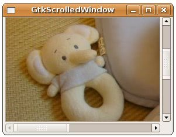

有些元件預設並沒有捲軸，當視窗或父元件無法顯示其大小時，只會顯示部份區域，但不會出現捲軸，如果您希望這類元件可以出現捲軸，則可以使用GtkScrolledWindow，在 GtkTextView 中曾經使用過GtkScrolledWindow，在使用gtk_scrolled_window_new()建立GtkScrolledWindow時可以給定GtkAdjustment，在 GtkSpinButton 中介紹過它的使用，如果您給定為NULL，則會自動生成預設的兩個GtkAdjustment：
GtkWidget *scrolledWindow = gtk_scrolled_window_new(NULL, NULL);
GtkScrolledWindow包括水平捲軸、垂直捲軸，可使用gtk_scrolled_window_set_policy()捲軸的出現策略：
void gtk_scrolled_window_set_policy( GtkScrolledWindow *scrolled_window,
GtkPolicyType hscrollbar_policy,
GtkPolicyType vscrollbar_policy );
GtkPolicyType hscrollbar_policy,
GtkPolicyType vscrollbar_policy );
可設定的策略有GTK_POLICY_AUTOMATIC或GTK_POLICY_ALWAYS。若要將元件加入GtkScrolledWindow，若元件本身具有原生捲動能力（例如 GtkTextView），則可使用gtk_container_add()，若元件本身不具備有原生捲動能力（例如GtkImage），則可以使用gtk_scrolled_window_add_with_viewport()，View Port元件的作用，是允許在其中放置一個超過View Port大小的元件，您可以看到的是View Port設定範圍中的部份，gtk_scrolled_window_add_with_viewport()會為元件加上一個 GtkViewPort，然後再將GtkViewPort加至GtkScrolledWindow的簡便函式。
在下面的這個範例程式中，使用GtkImage來設定顯示圖片，在這邊使用GtkScrolledWindow為其加上捲軸功能：
- gtk_scrolled_window_demo.c
#include <gtk/gtk.h>
int main(int argc, char *argv[]) {
GtkWidget *window;
GtkWidget *image;
GtkWidget *scrolledWindow;
gtk_init(&argc, &argv);
window = gtk_window_new(GTK_WINDOW_TOPLEVEL);
gtk_window_set_title(GTK_WINDOW(window), "GtkScrolledWindow");
gtk_window_set_default_size(GTK_WINDOW(window), 320, 200);
image = gtk_image_new_from_file("kaka.jpg");
scrolledWindow = gtk_scrolled_window_new(NULL, NULL);
gtk_scrolled_window_add_with_viewport(
GTK_SCROLLED_WINDOW(scrolledWindow), image);
gtk_container_add(GTK_CONTAINER(window), scrolledWindow);
g_signal_connect(GTK_OBJECT(window), "destroy",
G_CALLBACK(gtk_main_quit), NULL);
gtk_widget_show_all(window);
gtk_main();
return 0;
}一個執行的結果如下所示：
